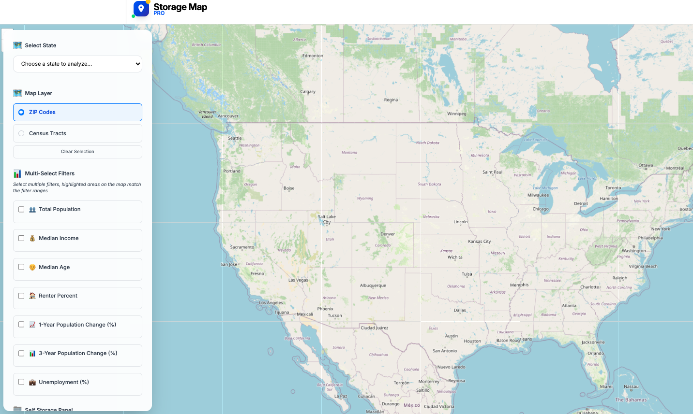
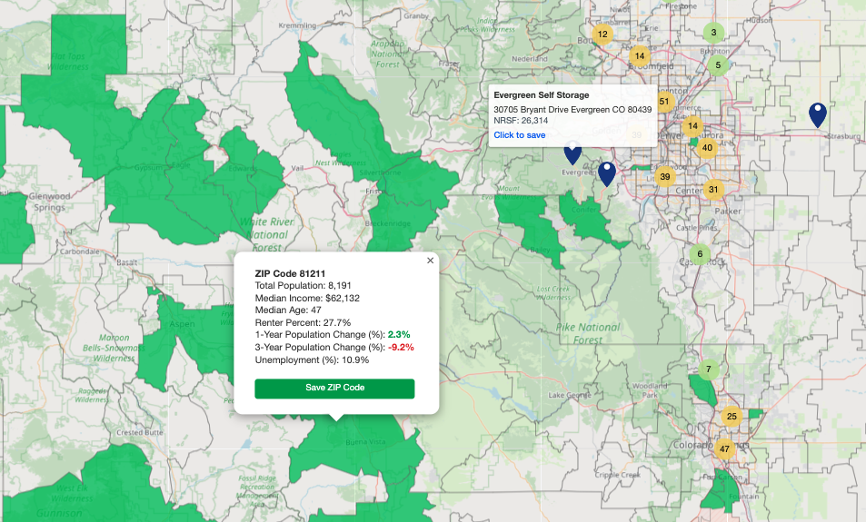

What the app does
The app pulls in US Census data and visually represents the data on a map view. A user can toggle between a zip code map layer or a census tract layer. Additionally, the user can set different demographic filters and see — in real time — zip codes and census tracts that match the filters.
For example, a user can set zip codes with median incomes over $50,000 and a median age of 40 with population growth of 5%.
I also added self storage properties into the map so depending on which state a user selects, the storage locations will populate on the map. The goal of this app was to identify markets that are worth investing in or exploring further for self storage investors and developers.
How and why I built it
After watching some YouTube videos of real estate data apps, I wanted to take on the challenge of creating one myself. I didn't have any software development experience, but heavily relied on AI to assist in building this app.
Therefore, I started the journey of creating StorageMapPro .
First, I needed to extract US Census data in an organized and readable format. This was achieved by using a Python script that interacted with the US Census API. Two scripts were created — one for ZIP codes and the other for census tracts.
Secondly, I needed to obtain the shapefiles for both (TIGER/Line Shapefiles from the US Census). Shapefiles contain attributes such as points, lines, and polygons, allowing boundaries to be visually represented on the map. These files also contain entity codes that can be linked to the census demographic data.
What I learned
- 1. Use Python scripts to significantly speed up the process of obtaining US Census data and creating calculations.
- 2. Review raw data for accuracy and format before using it. This is key!
- 3. Convert data from Excel to JSON format for faster web processing.
- 4. Understand what data can be requested from APIs and how parameters must be formatted.
- 5. How hosting, servers, and databases work together (I used Digitial Ocean and Bluehost)
- 6. How to test a web app locally using npm run dev and php artisan serve.
- 7. Using GitHub to deploy the app and understanding why it is essential for version control, deployment, and security.